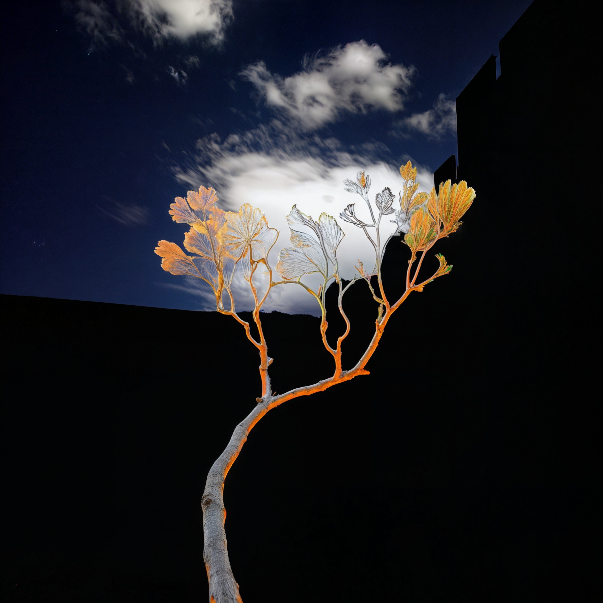
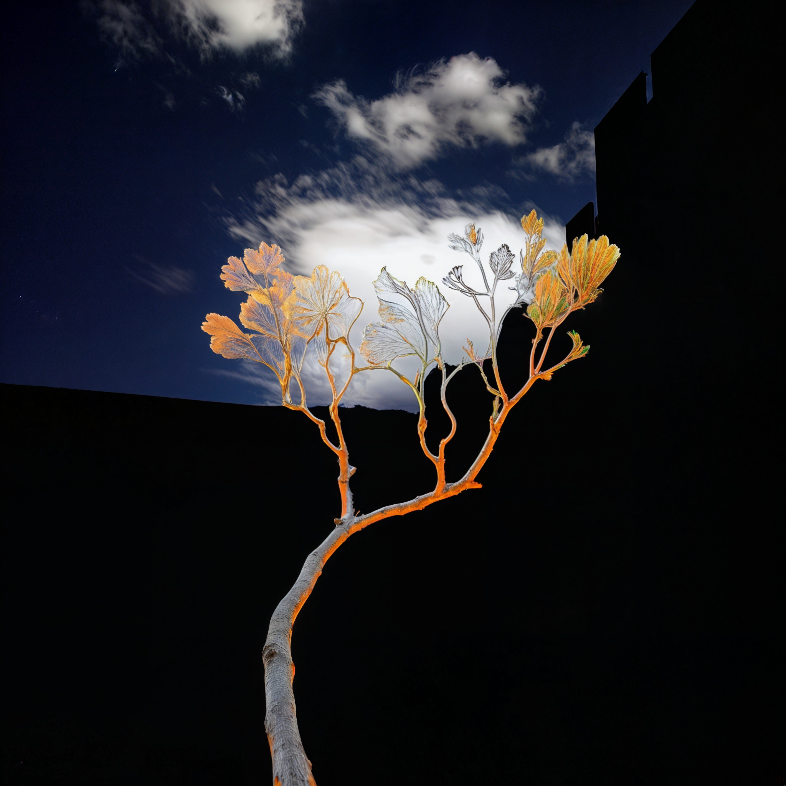

Augmented Earth (Post-Photography)
Augmented Earth is an expansive, evolving archive of over 2,000 images reimagining nature through the lens of post-photographic AI. Each work begins with a photograph of the natural world, captured with a Nikon DSLR, and corresponding digital artworks of abstract textures and color fields. These are then presented to an AI, instructed to generate a new image as if nature were learning to mimic human art.
The resulting visuals are not photographs, yet they could be. They are not purely digital paintings, nor purely AI outputs—but something hybrid, layered, and uncanny. This liminal quality gives the work a surreal edge: familiar landscapes filtered through algorithmic dreams. Augmented Earth explores artificial beauty, digital ecology, and what it means to see nature when its image is reconstructed by machines.


 
